API Channels
API Channels section has covered all of APIs settings in one section and One can explore shortly what types of APIs need to be set up to make ChatPion complete.
We have divided the APIs in Four Sections (also navigate in right side bar) which are as belows:
- Payment APIs
- Social Medias
- Email Autoresponder
- SMS API
- Email API
Payment APIs (Admin : Extended License Only)
ChatPion is a white-label Saas application. You can sell the service of ChatPion to your end-users— establishing a software service business as your own brand. To complete the process admin have complete the Payment APIs settings. So let's dive into the section.
ChatPion has integrated two global and some local Payment Gateways with the system. These are given below:
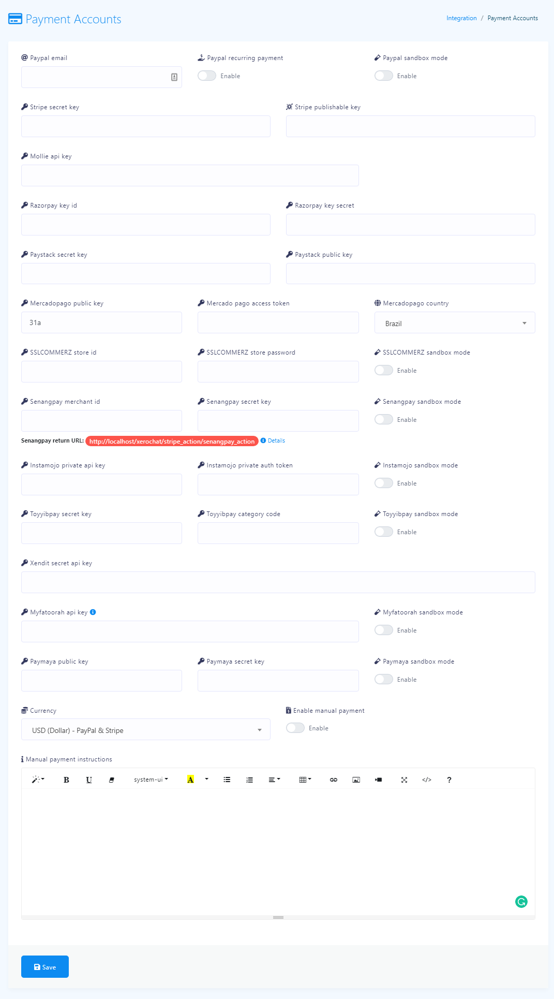
Paypal
PayPal Email: Provide your PayPal business account email.
PayPal Sandbox Mode: If you want to test the paypal payment then you have to enable sandbox mode.
Stripe
Stripe secret Key & Stripe published key: If you want to integrate your Stripe account then you’ve put your stripe secret key and stripe published key of your stripe account.
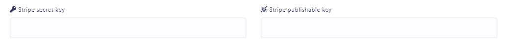
Mollie
Mollie API Key: If you want to integrate the Mollie payment method then you’ve to put your Mollie API key. Visit Mollie and go to Settings > API Keys & Webhooks and copy your key id and key secret and paste into the corresponding field.
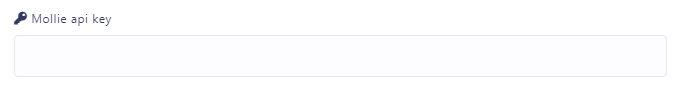
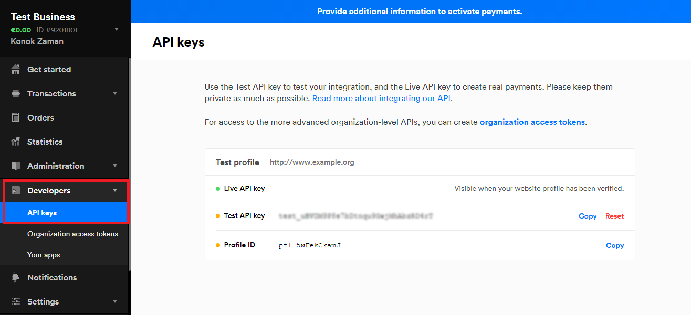
Razorpay
Razorpay Key ID & key secret: If you want to integrate Razorpay payment method then you’ve to put your razorpay key id and secret key. Visit Razorpay and go to Settings > API Keys and copy your key id and key secret and paste into the corresponding field.
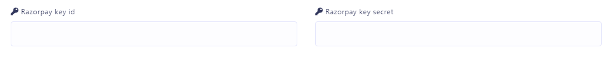
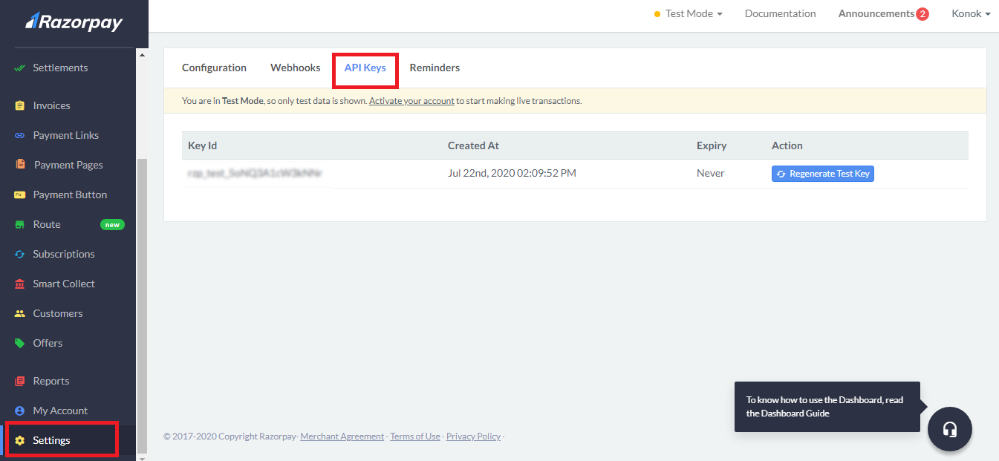
Paystack
Paystack Secret Key & public key: If you want to integrate paystack payment method then you’ve to put your paystack secret key and public key. Visit Paystack and go to Settings > API Keys & Webhooks and copy your key id and key secret and paste into the corresponding field.
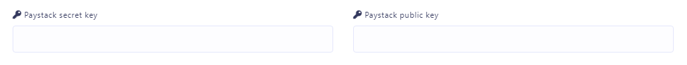
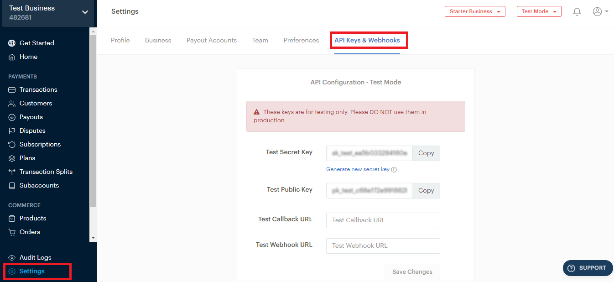
Mercadopago
Mercado pago public key & acceess token: If you want to integrate Mercado pago payment method then you’ve to put your Mercado pago public key & acceess token. Visit Mercado pago and copy Mercado pago public key & acceess token and put them into the corresponding fields.
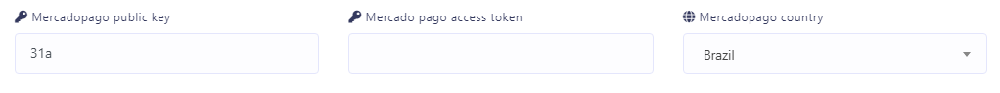
SSLCOMMERZ
SSLCOMMERZ store id & store password: If you want to integrate SSLCOMMERZ payment method then you’ve to put your SSLCOMMERZ store id & store password.

Senangpay
Senangpay merchant id & secret key: If you want to integrate Senangpay payment method then you’ve to put your Senangpay merchant id and secret key. Visit Senangpay and go to Settings > Profile and Scroll down to Shopping cart integration link. From there copy your merchant id and secret key and paste into the corresponding field. Also please copy the Senangpay Return url from Ecommerce store checkout Settings and paste it into Return url of Senangpay panel.
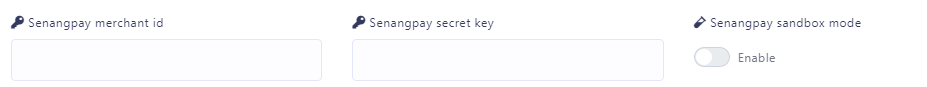
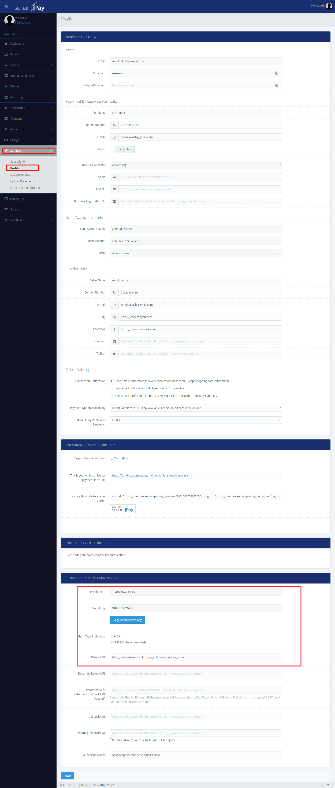
Instamojo
Instamojo private api key & private auth token: If you want to integrate Instamojo payment method then you’ve to put your Instamojo private api key & private auth token. Visit Instamojo and go to API & Plugins and copy your private api key & private auth token and paste into the corresponding field.
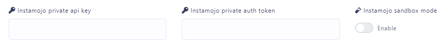
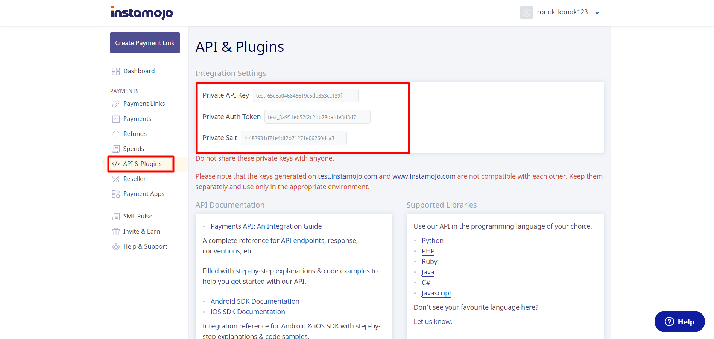
Toyyibpay
Toyyibpay Secret Key & Toyyibpay Category code: If you want to integrate Instamojo payment method then you’ve to put your Instamojo private api key & private auth token. Visit Instamojo and go to API & Plugins and copy your private api key & private auth token and paste into the corresponding field.
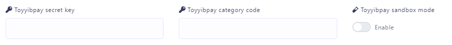
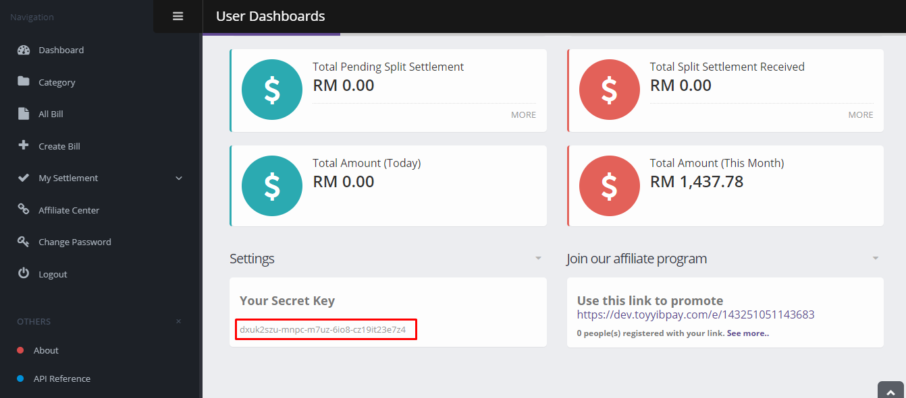
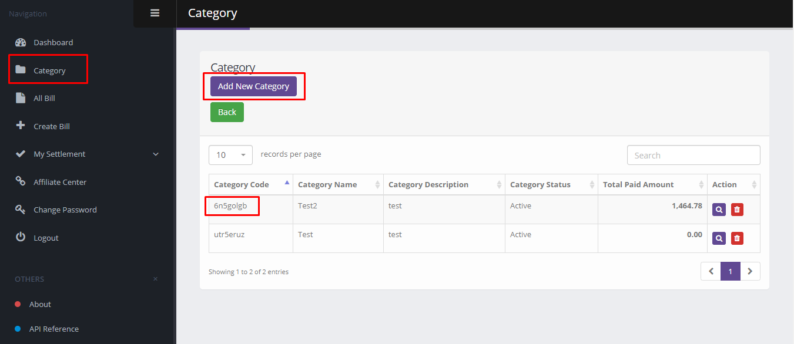
Xendit
Xendit secret api key: If you want to integrate Xendit payment method then you’ve to put your Xendit secret api key. Visit Xendit and go to Settings -> Developer (API Key) and then click on Generate secret key and then copy Publick follow the instruction and put the API key into the corresponding field.
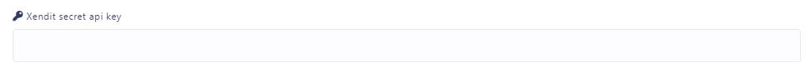
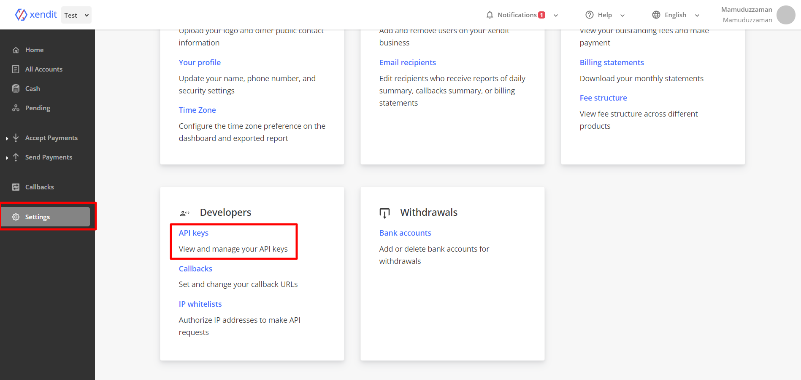
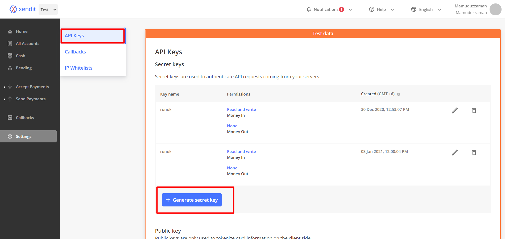
Myfatoorah
Myfatoorah Api Key: If you want to integrate Myfatoorah payment method then you’ve to put your Myfatoorah api key. Visit Myfatoorah and go to Live Token and follow the instruction and put the API key into the corresponding field.
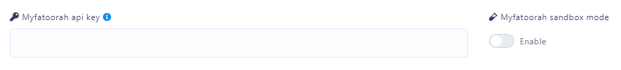
Paymaya
Paymaya Public Key & Secret Key: If you want to integrate Paymaya payment method then you’ve to put your Paymaya publick key and secret key.
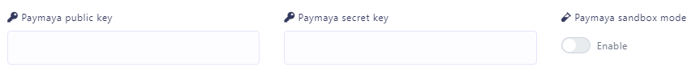
Manual
Manual Payment: Manual payment is for take payment manually from user manually and uploads payment documents in the system.
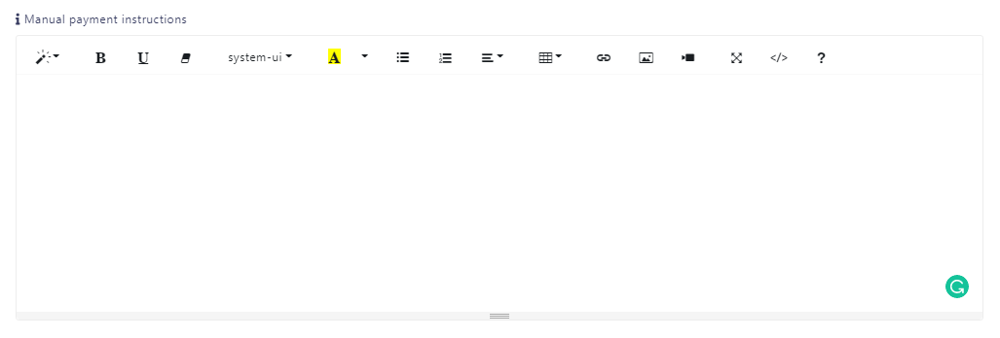
Currency
Select your country payment currency.
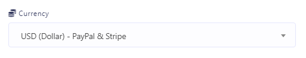
Social Medias
ChatPion is a multichannel-marketing Software. To attract people to your business and products, it has a social post scheduler that can publish and schedule posts on different popular social media, such as Facebook, Instagram, Twitter, and so on. Integrated Social Medias are:
- Medium
- Blogger
- Wordpress
- Wordpress (self-hosted)
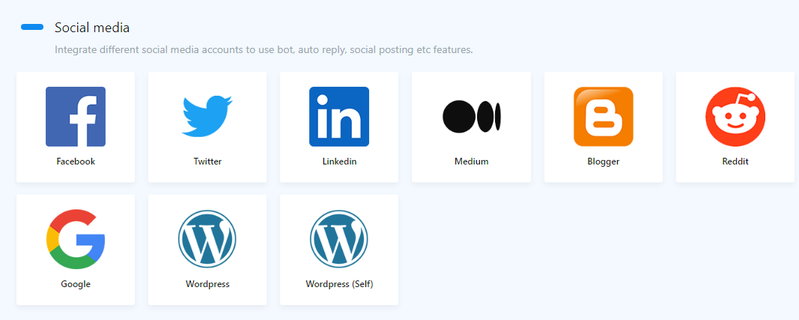
As above social medias are third-party application, so you've to complete some process to get started publishing contents on these medias. You've to set up their apis and import your corresponding social media account to get started. So let's dive into more deep.
Hover on the Facebook Social Media, you'll see two buttons app settings and import account. Click on the corresponding button for the corresponding action.
How to set up Facebook App
How to Submit Facebook App
Hover On the Twitter media and go to api settings section and follow the below videos.
How to create Twitter App - Social Poster
Twitter Developer Account Verification
Hover On the LinkedIn media and go to api settings section and follow the below videos.
How to create LinkedIn App
Medium
Hover On the Medium, click on the import account button and you'll be redirected to the import account section. Now click on the import acconut button and put integration token of medium account. No app is needed to create for medium.

Hover On the Reddit, click on the api settings and set up reddit app by following the below video and then import your reddit account.
How to create Reddit App
Wordpress
Hover On the wordpress, click on the api settings and set up wordpress app by following the below video and then import your wordpress account.
How to create WordPress App
Wordpress (self-hosted)
Hover On the wordpress (self-hosted), click on the api settings and set up wordpress app by following the below video and then import your wordpress account.
How to create WordPress (self-hosted) App
Email Autoresponder
Besides all other amazing features, chatpion also has integrated some email management third party tools for autoresponding over emails from the system. There are five email autoresponders are integrated which will send collected emails from the chatpion to the corresponding autoresponders and email will be added to the autoresponder email lists. Chatpion email Autoresponders are :
- Mailchimp
- Sendinblue
- Acelle
- Mautic
- ActiveCampaign
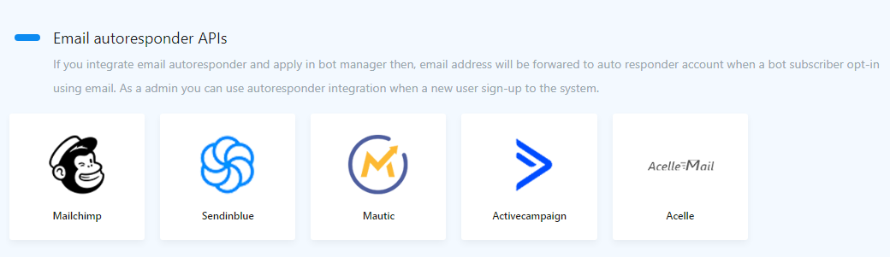
Mailchimp
You can now integrate MailChimp into ChatPion. From now with this feature all the emails collected from messenger Quick Reply or user’s sign up will automatically added to your desired MailChimp list.
Integration procedure:
Click on the mailchimp and you'll be redirected to the mailchimp account adding section.
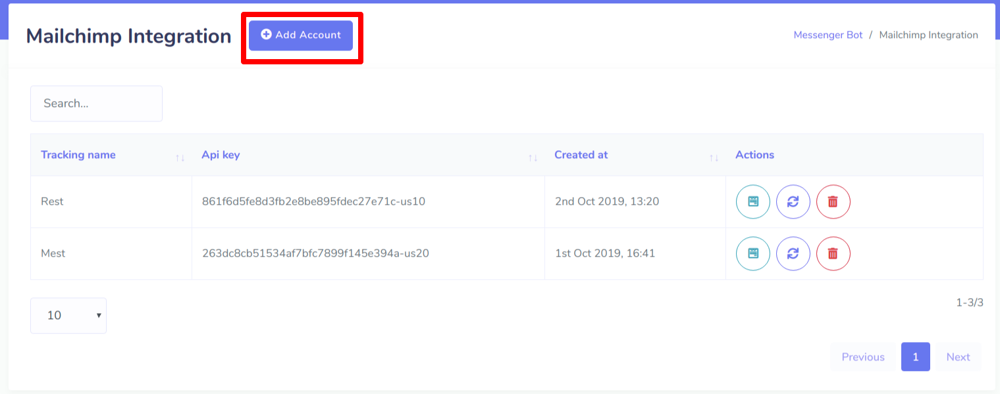
Click the Add Account button. A popup window will appear to put API key and Tracking Name. Please provide your MailChimp account API key and also give a name so that you can recognize it later.
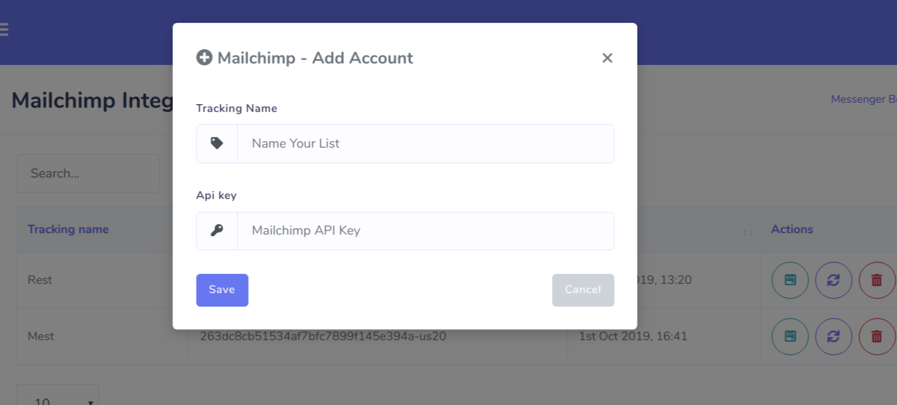
How to get MailChimp API key?
Sendinblue
By integrating Sendinblue, all the emails collected from messenger Quick Reply or user’s sign up will automatically be added to your desired Sendinblue list.
Integration procedure:
Click on the Sendinblue and you'll be redirected to the Sendinblue account adding section.
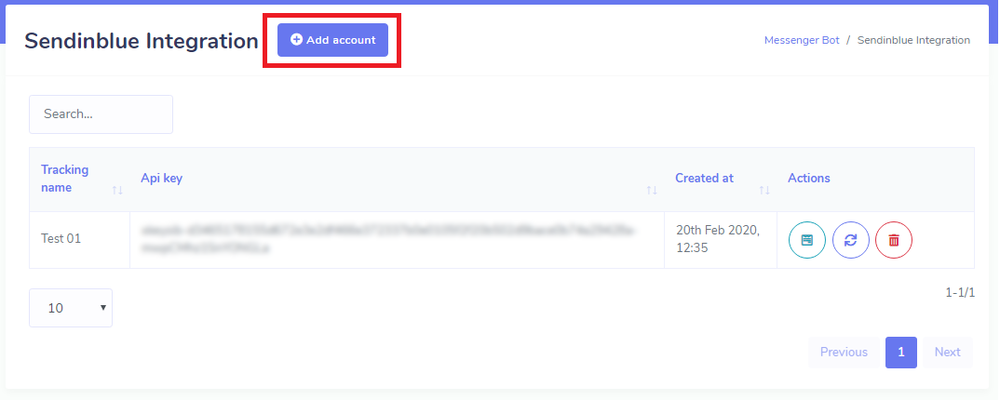
Click the Add Account button. A popup window will appear to put API key and Tracking Name. Please provide your Sendinblue account API key and also give a name so that you can recognize it later.
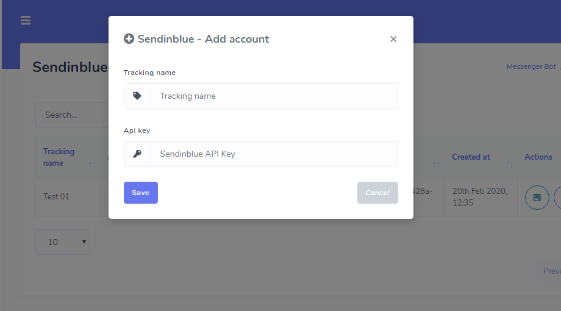
How to get Sendinblue API key?
Mautic
By integrating Mautic, all the emails collected from messenger Quick Reply or user’s sign up will automatically be added to your desired Mautic list.
Integration procedure:
Click on the Mautic and you'll be redirected to the Mautic account adding section.
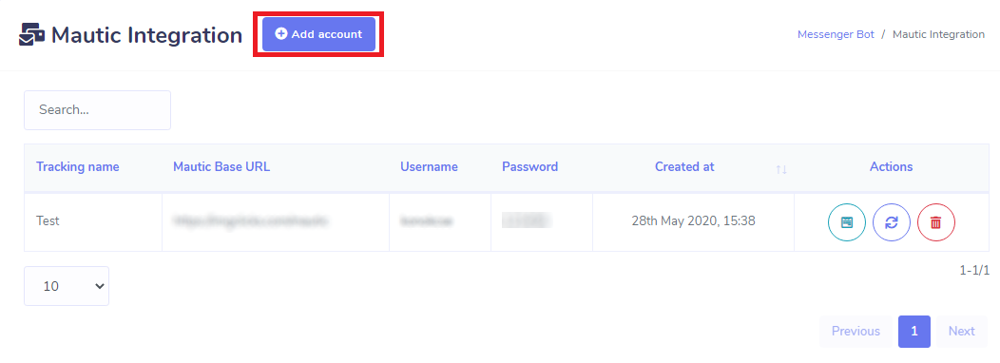
Click the Add Account button. A popup window will appear to put Tracking Name, Mautic Base URL, Mautic account username and Mautic account password. Please provide your Mautic Base URL, Mautic account username, Mautic account password and also give a name so that you can recognize it later.
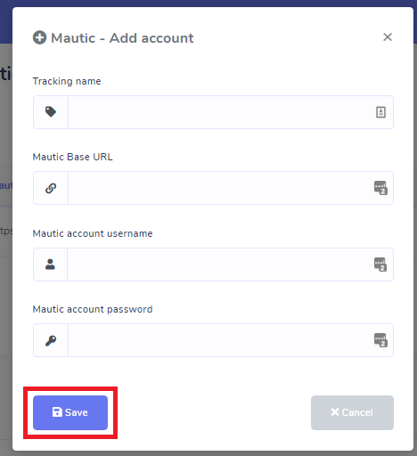
How To Integrate Mautic Email Marketing App With ChatPion?
ActiveCampaign
By integrating ActiveCampaign, all the emails collected from messenger Quick Reply or user’s sign up will automatically be added to your desired ActiveCampaign list.
Integration procedure:
Click on the ActiveCampaign and you'll be redirected to the ActiveCampaign account adding section.
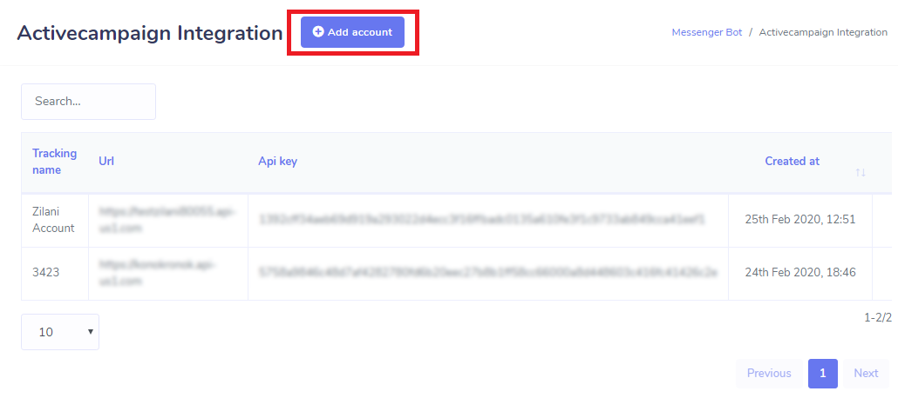
Click the Add Account button. A popup window will appear to put Tracking Name, API URL and API Key. Please provide your ActiveCampaign account’s API URL, API key and also give a name so that you can recognize it later.
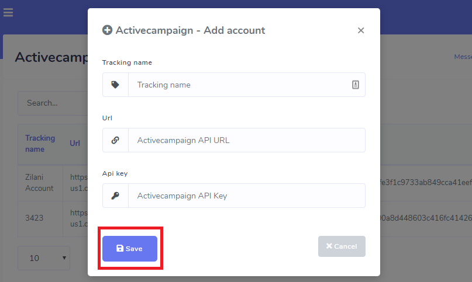
How to get ActiveCampaign API key?
Acelle
By integrating Acelle, all the emails collected from messenger Quick Reply or user’s sign up will automatically be added to your desired Acelle list.
Integration procedure:
Click on the Acelle and you'll be redirected to the Acelle account adding section.
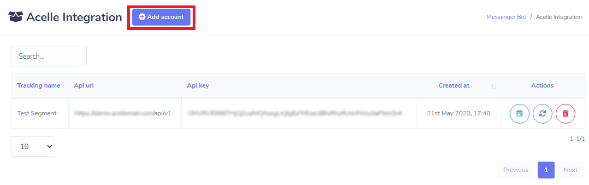
Click the Add Account button. A popup window will appear to put Tracking Name, API URL and API Key. Please provide your Acelle account’s API URL ( example: https://example.com/api/v1 ), API key and also give a name so that you can recognize it later.
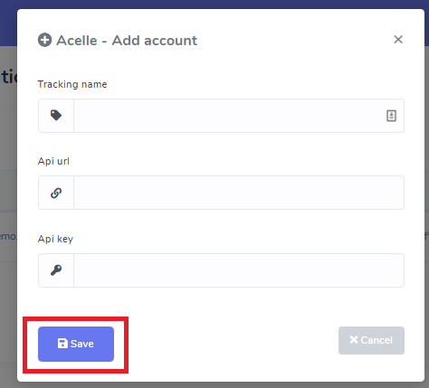
How To Integrate Acelle Email Marketing App With ChatPion
How to Collect Emails and send them to Email Autoresponders lists
With ChatPion you can collect emails in two ways. One is from when a user sign up into ChatPion system. In order to send user’s sign up email to your corresponding email autoresponder (mailchimp/sendinblue/mautic/acelle/activecampaign) list you need to configure a setting going to the menu System → Settings then click Change Settings from General section. Now click Email Auto Responder tab and select your corresponding email autoresponder (mailchimp/sendinblue/mautic/acelle/activecampaign) list where you want to send the collected email.
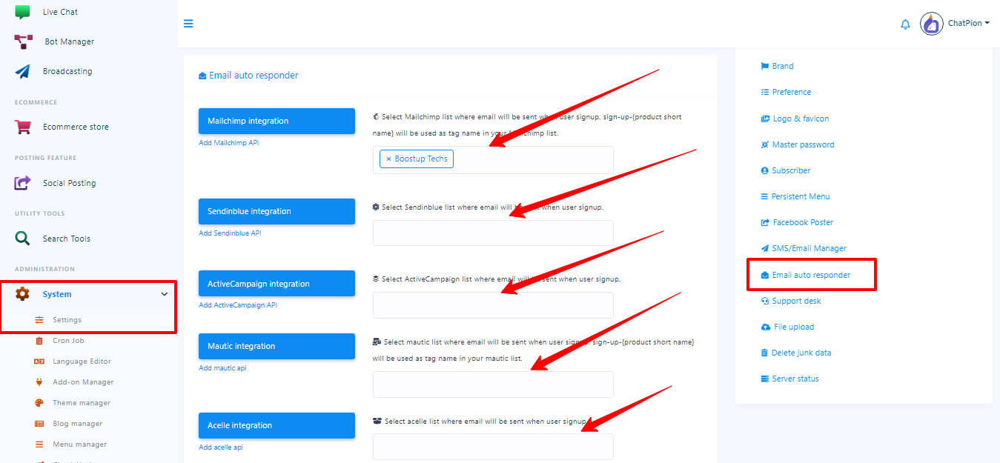
Other one is from Quick Reply of Messenger Bot. You also need to configure a setting to send collected emails to your corresponding email autoresponder (mailchimp/sendinblue/mautic/acelle/activecampaign) list. For this please go to the menu Bot Messenger, then click Actions link from Bot Settings section. Now click the General Settings tab and then select your desired corresponding email autoresponder (mailchimp/sendinblue/mautic/acelle/activecampaign) list and hit the save button.
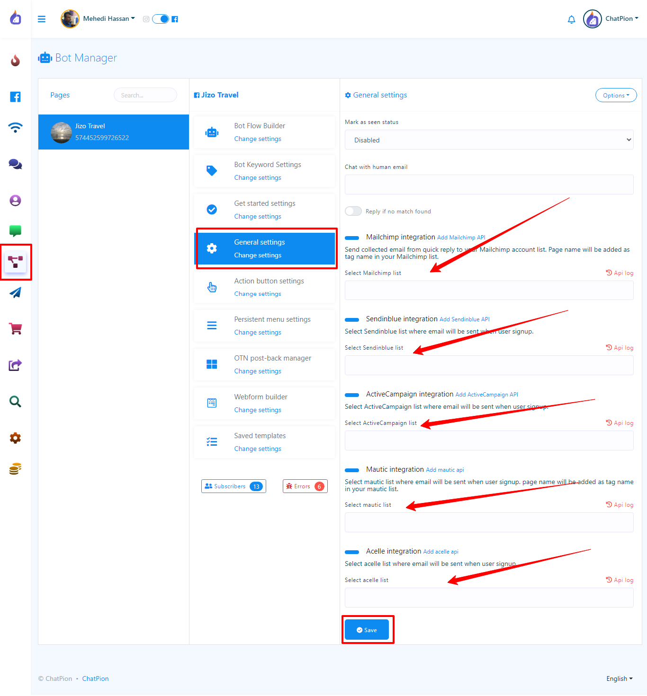
SMS APIs
Chatpion has enhances itself with it's amazing features. Beside all other features it also has SMS broadcasting features. Chatpion has made the SMS broadcasting easy by integrating some very popular SMS Gateways and also has custom GET/POST API added feature. Below are the available gateways that an user can integrate with the system :
- Twilio
- Plivo
- Clickatell
- Clickatell-platform
- Planet
- Nexmo
- MSG91
- Africastalking
- SemySMS
- Routesms.com
- HTTP GET/POST
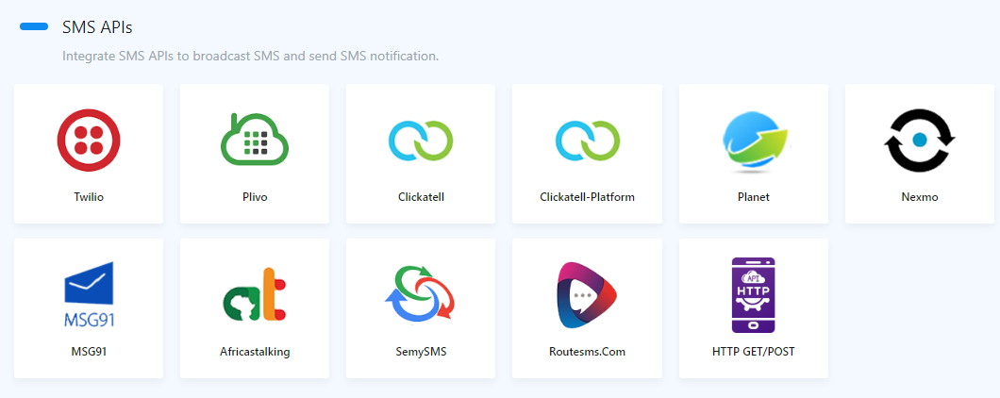
Twilio
Twilio is one of the most popular SMS Gateway in worldwide. Chatpion has integrated Twilio by using their API. You can easily use twilio service through chatpion system for SMS broadcasting. Click on the Twilio and you'll redirect to the SMS API management section. click on Add new API -> Add default Gateway, a modal will appear and select twilio from the API list.
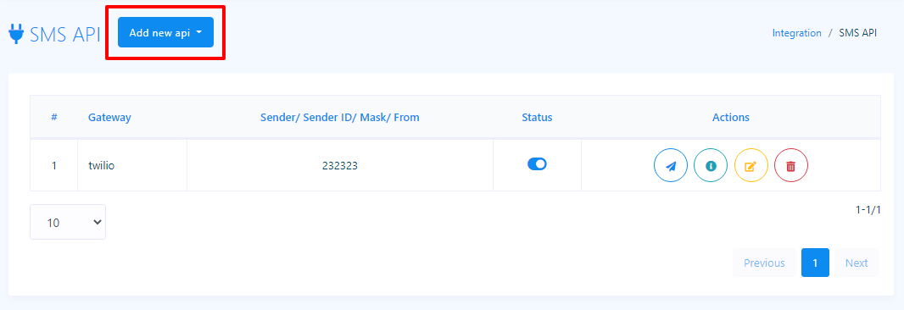
You can see what is need to add a SMS api by click on Instruction button from SMS API adding modal.
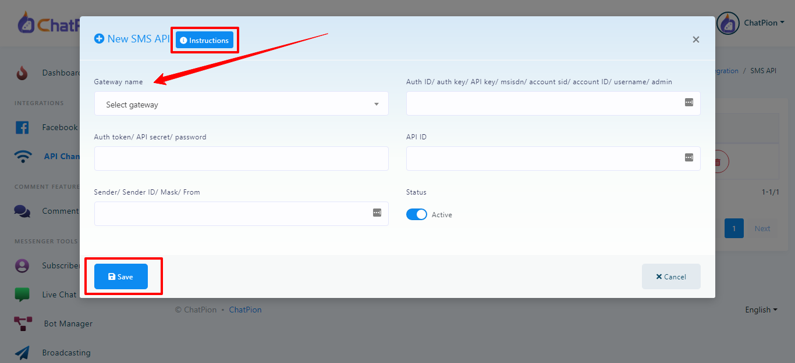
You can test your API by click on the test icon of the added API from the API lists to see if the API works correctly or returns any errors.
How to integrate Twilio SMS Gateway?
Plivo
Plivo is another one of the most popular SMS Gateway in worldwide. Chatpion has integrated Plivo by using their API. You can easily use Plivo service through chatpion system for SMS broadcasting. Click on the Plivo and you'll redirect to the SMS API management section. click on Add new API -> Add default Gateway, a modal will appear and select Plivo from the Gateway name list.
You can see what is need to add a SMS api by click on Instruction button from SMS API adding modal.
You can test your API by click on the test icon of the added API from the API lists to see if the API works correctly or returns any errors.
How to integrate Plivo SMS Gateway?
Clickatell
Clickatell is another one of the most popular SMS Gateway in worldwide. Chatpion has integrated Clickatell by using their API. You can easily use Clickatell service through chatpion system for SMS broadcasting. Click on the Clickatell and you'll redirect to the SMS API management section. click on Add new API -> Add default Gateway, a modal will appear and select Clickatell from the API list.
You can see what is need to add a SMS api by click on Instruction button from SMS API adding modal.
You can test your API by click on the test icon of the added API from the API lists to see if the API works correctly or returns any errors.
Clickatell-platform
Clickatell-platform is another one of the most popular SMS Gateway in worldwide. Chatpion has integrated Clickatell-platform by using their API. You can easily use Clickatell-platform service through chatpion system for SMS broadcasting. Click on the Clickatell-platform and you'll redirect to the SMS API management section. click on Add new API -> Add default Gateway, a modal will appear and select Clickatell-platform from the API list.
You can see what is need to add a SMS api by click on Instruction button from SMS API adding modal.
You can test your API by click on the test icon of the added API from the API lists to see if the API works correctly or returns any errors.
How to integrate Clickatell-platform SMS Gateway?
Planet
Planet is another one of the most popular SMS Gateway in worldwide. Chatpion has integrated Planet by using their API. You can easily use Planet service through chatpion system for SMS broadcasting. Click on the Planet and you'll redirect to the SMS API management section. click on Add new API -> Add default Gateway, a modal will appear and select Planet from the API list.
You can see what is need to add a SMS api by click on Instruction button from SMS API adding modal.
You can test your API by click on the test icon of the added API from the API lists to see if the API works correctly or returns any errors.
Nexmo
Nexmo is another one of the most popular SMS Gateway in worldwide. Chatpion has integrated Nexmo by using their API. You can easily use Nexmo service through chatpion system for SMS broadcasting. Click on the Nexmo and you'll redirect to the SMS API management section. click on Add new API -> Add default Gateway, a modal will appear and select Nexmo from the API list.
You can see what is need to add a SMS api by click on Instruction button from SMS API adding modal.
You can test your API by click on the test icon of the added API from the API lists to see if the API works correctly or returns any errors.
How to integrate Nexmo SMS Gateway?
MSG91
MSG91 is another one of the most popular SMS Gateway in worldwide. Chatpion has integrated MSG91 by using their API. You can easily use MSG91 service through chatpion system for SMS broadcasting. Click on the MSG91 and you'll redirect to the SMS API management section. click on Add new API -> Add default Gateway, a modal will appear and select MSG91 from the API list.
You can see what is need to add a SMS api by click on Instruction button from SMS API adding modal.
You can test your API by click on the test icon of the added API from the API lists to see if the API works correctly or returns any errors.
How to integrate MSG91 SMS Gateway?
Africa's Talking
Africa's Talking is another one of the most popular SMS Gateway in worldwide. Chatpion has integrated Africa's Talking by using their API. You can easily use Africa's Talking service through chatpion system for SMS broadcasting. Click on the Africa's Talking and you'll redirect to the SMS API management section. click on Add new API -> Add default Gateway, a modal will appear and select Africa's Talking from the API list.
You can see what is need to add a SMS api by click on Instruction button from SMS API adding modal.
You can test your API by click on the test icon of the added API from the API lists to see if the API works correctly or returns any errors.
How to integrate Africa's Talking SMS Gateway?
SemySMS
SemySMS is another one of the most popular SMS Gateway in worldwide. Chatpion has integrated SemySMS by using their API. You can easily use SemySMS service through chatpion system for SMS broadcasting. Click on the SemySMS and you'll redirect to the SMS API management section. click on Add new API -> Add default Gateway, a modal will appear and select SemySMS from the API list.
You can see what is need to add a SMS api by click on Instruction button from SMS API adding modal.
You can test your API by click on the test icon of the added API from the API lists to see if the API works correctly or returns any errors.
How to integrate SemySMS SMS Gateway?
RouteSMS.com
RouteSMS.com is another one of the most popular SMS Gateway in worldwide. Chatpion has integrated RouteSMS.com by using their API. You can easily use RouteSMS.com service through chatpion system for SMS broadcasting. Click on the RouteSMS.com and you'll redirect to the SMS API management section. click on Add new API -> Add default Gateway, a modal will appear and select RouteSMS.com from the API list. You'll need the host url for adding Routesms.com
You can see what is need to add a SMS api by click on Instruction button from SMS API adding modal.
You can test your API by click on the test icon of the added API from the API lists to see if the API works correctly or returns any errors.
Custom HTTP GET API
You know by default ChatPion supports Twillo, Nexmo, Clickatell, Plivo & some other SMS gateway. However for global pricing variation for sending SMS , you may need to add your local SMS gateway provider.
It's quite impossible to add each individual API in reality by us actually.
But as a solution we have implemented a system where you can add any HTTP GET Request API for sending SMS. you can use your preferable SMS gateway on Chatpion which supports HTTP GET Request for message sending. Only thing you have to do is to create a custom SMS API using ChatPion. Just follow below steps:
- #Step 1
Go to API Channels -> SMS API Section -> HTTP GET/Post option. You'll be redirected to the SMS API management section. Click on the Add SMS API -> Add Custom SMS API [GET] - #Step 2
Fill the API name and HTTP/HTTPS URL fields. For the HTTP URL field please put url ( must be with http or https ) that is functional for sending message and must be for HTTP GET request. - #Step 3:
Now click the “Analyze and test call” button. It will call the url, you just provided, and show you the response of sending message using that url.
It will also show you the query parameters analyzed by the system. These parameters can be your api key, action, sender id etc. For every query parameter it will indicate the parameter type and its corresponding value.
Keep the parameter type unchanged which are Fixed for your new custom API. You can update the value as your need.
You just have to change the parameter type for Destination Number and Message Content . While changing these parameters type, you will notice that new value has replaced on your newly generated custom API url. When you will send SMS through this custom API then these contents will be replaced by your given contents. - #Step 4
Now click the Save button. That’s all. You just have created a custom SMS API on ChatPion for sending sms.
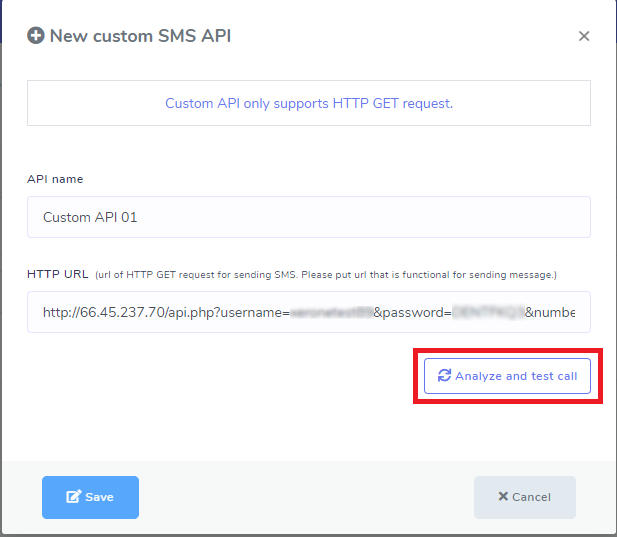
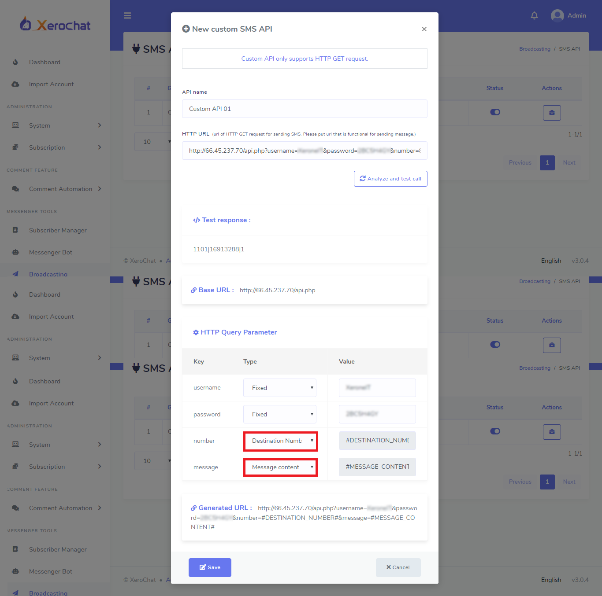
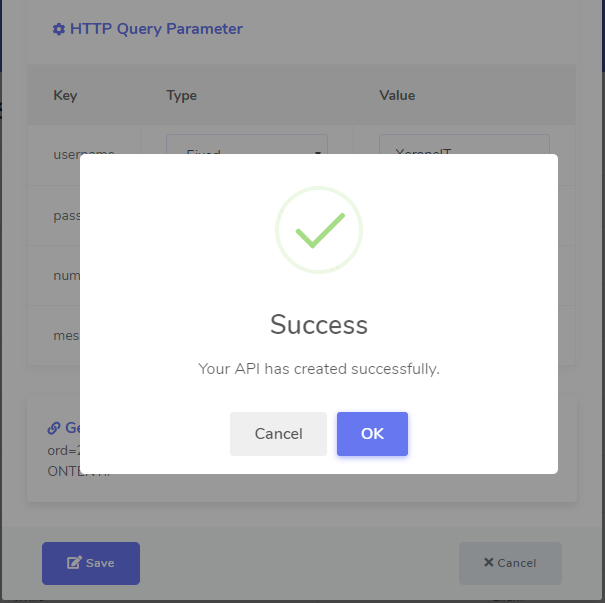
You can test your API by click on the test icon of the added API from the API lists to see if the API works correctly or returns any errors.
How to integrate Custom [HTTP GET] SMS Gateway?
Custom HTTP Post API
You know by default ChatPion supports Twillo, Nexmo, Clickatell, Plivo & some other SMS gateway. However for global pricing variation for sending SMS , you may need to add your local SMS gateway provider.
It's quite impossible to add each individual API in reality by us actually.
But as a solution we have implemented a system where you can add any HTTP POST Request API for sending SMS. you can use your preferable SMS gateway on Chatpion which supports HTTP POST Request for message sending. Only thing you have to do is to create a custom SMS API [POST] using ChatPion. Just follow below steps:
- #Step 1
Go to API Channels -> SMS API Section -> HTTP GET/Post option. You'll be redirected to the SMS API management section. Click on the Add SMS API -> Add Custom SMS API [POST] - #Step 2
Fill the API name and Base url fields.
For the Base url field please put url ( must be with http or https ) that is functional for sending message and must be for HTTP POST request. - #Step 3:
You can also add new parameter for custom sms post api. - #Step 4
Now click the “Test response” button. It will call the url, you just provided, and show you the response of sending message using that url and the provided post parameter .The parameter is included with key, type and value.
Keep the parameter type unchanged which are Fixed for your new custom post API. You can add the value as your need. You just have to change the parameter type for Destination Number and Message Content .The parameter must have the Destination Number and Message Content. - #Step 5
Now click the Save button. That’s all. You just have created a custom SMS API [POST] on ChatPion for sending sms.
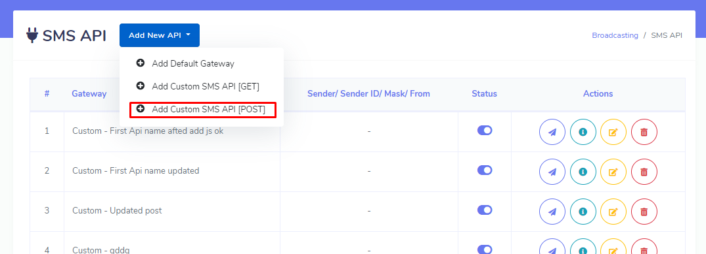
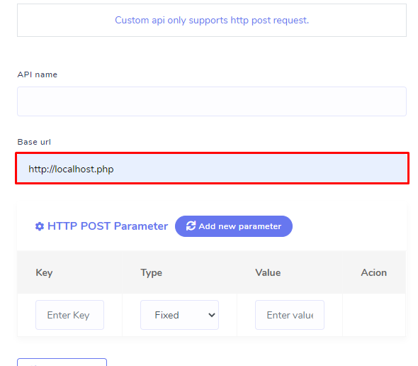
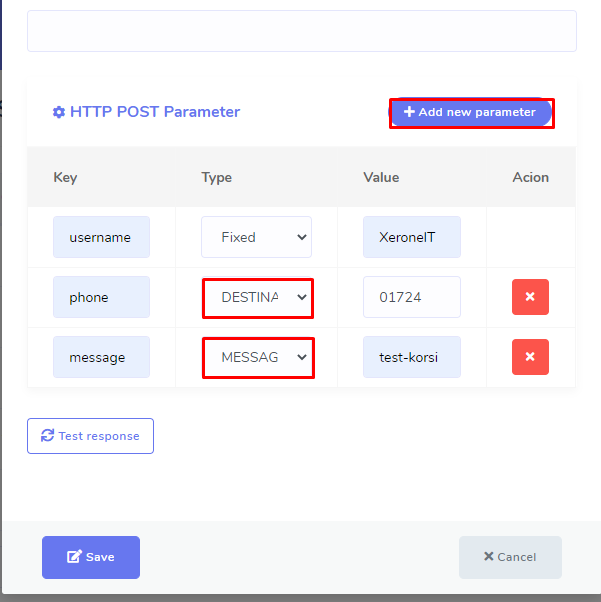
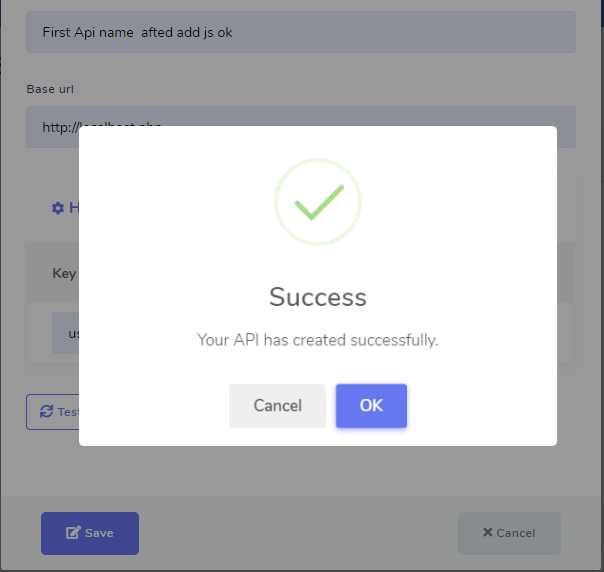
You can test your API by click on the test icon of the added API from the API lists to see if the API works correctly or returns any errors.
Email API
Chatpion has enhances itself with it's amazing features. Beside all other features it also has Email broadcasting features. Chatpion has made the Email broadcasting easy by integrating some very popular Email Gateways and allow to add SMTP set up. Below Email Gateways can be integrate for Email Broadcasting :
- SMTP
- Sendgrid
- Mailgun
- Mandrill
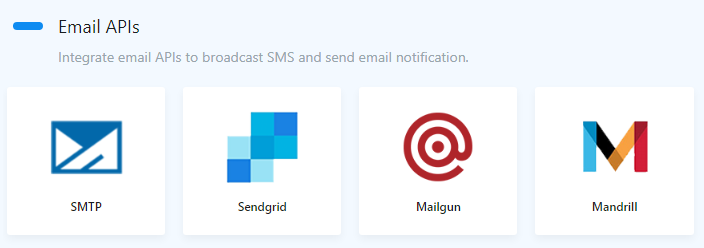
SMTP
ChatPion is the most powerful multi-channel marketing application in the world. It enhances itself with lots of marketing features which are very useful to our customers. You can use SMTP set up for broadcasting emails. Click On the SMTP and you'll be redirected to the SMTP section of the system
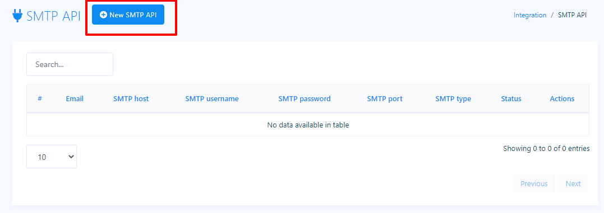
click on the New SMTP API, a modal for adding SMTP will be appear and you'll need the following information to create a new one:
- Email Address
- SMTP Host
- SMTP Port
- SMTP username
- SMTP Password
- SMTP Type
- Sender Name (Optional)
How to Create SMTP and integrate with Chatpion
Sendgrid
Beside SMTP, you may use Sendgrid email gateway for email broadcasting. Chantpion also integrated Sendgrid by using their API. Just click on the Sendgrid and you'll redirected to the sendgrid management page.
Click on New Sendgrid API and a modal will appear to add sendgrid api. Fill up the form with necessary information and hit Save button.
How to Integrate Sendgrid Email Gateways= with Chatpion
Mailgun
Beside SMTP/Sendgrid, you may use Mailgun email gateway for email broadcasting. Chantpion also integrated Mailgun by using their API. Just click on the Mailgun and you'll redirected to the Mailgun management page.
Click on New Mailgun API and a modal will appear to add sendgrid api. Fill up the form with necessary information and hit Save button.
How to Integrate Mailgun Email Gateways= with Chatpion
Mandrill
Beside SMTP/Sendgrid/Mailgun, you may use Mandrill email gateway for email broadcasting. Chantpion also integrated Mandrill by using their API. Just click on the Mandrill and you'll redirected to the Mandrill management page.
Click on New Mandrill API and a modal will appear to add sendgrid api. Fill up the form with necessary information and hit Save button.